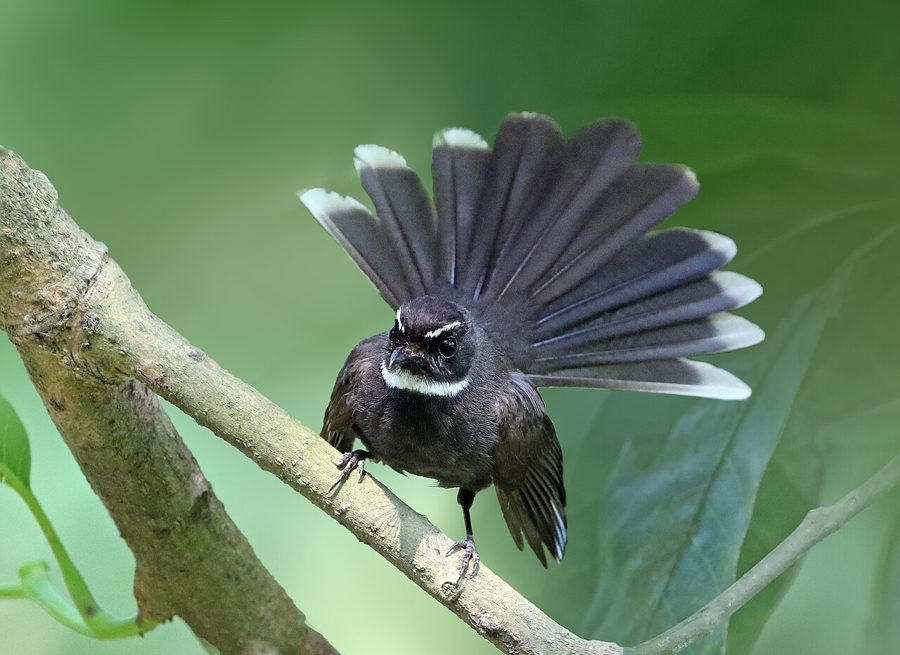

व्हाइट-थ्रोटेड फैंटेलWhite-throated Fantail
Rhipidura albicollis · Rhipiduridae · BRD-0366

- Scientific name वैज्ञानिक नाम
- Rhipidura albicollis (Vieillot, 1818)
- Family कुल
- Rhipiduridae
- Hindi हिंदी
- व्हाइट-थ्रोटेड फैंटेल
- Local names स्थानीय नाम
- white-throated fantail
- Status here यहाँ की स्थिति
- native
- Movement आवागमन
- Winter visitor
- Known from कहाँ दर्ज
- Others have published records from the wider Awadh–Purvanchal plain, none yet from Basti–Ayodhya अवध–पूर्वांचल से दूसरों के प्रकाशित अभिलेख, बस्ती–अयोध्या से अभी नहीं
- IUCN IUCN
- LC
- Review समीक्षा
- not yet reviewed
When to look कब देखें
Winter visitor शीतकालीन प्रवासी. Expected mainly in October, November, December, January, February. मुख्यतः अक्टूबर, नवंबर, दिसंबर, जनवरी, फ़रवरी में अपेक्षित।
Breeds in the Himalayas from Murree to Assam (Baker 1924). GBIF records in northern Uttar Pradesh fall between October and February. All migrants and visitors →
Tell it apart from इनसे अलग पहचानें
व्हाइट-थ्रोटेड फैंटेल / White-throated Fantail
Rhipidura albicollis (Vieillot, 1818) — Rhipiduridae
व्हाइट-थ्रोटेड फैंटेल — वनों और पेड़ों के बीच फुदकने वाली एक छोटी और पूंछ फैलाने वाली चिड़िया। बेकर (1924) के अनुसार इसका सिर और चेहरा कज्जल-काला होता है, आंख के ऊपर एक छोटी सफेद भौंह और गले पर एक साफ सफेद पट्टा होता है। बाकी शरीर धूसर-भूरा होता है और पूंछ के किनारे के पंख सफेद सिरे वाले होते हैं। यह पेड़ों की डालियों पर फुदकती है।
Quick Identification त्वरित पहचान
| Feature | Description |
|---|---|
| Habit | Restless, active understorey flycatcher constantly fanning and flirting its tail |
| Face & Crown | Forehead, crown, lores, and ear-coverts black; short white supercilium above eye (Baker 1924, p. 280) |
| Throat | Distinctive clean white throat patch produced as a semi-collar up neck sides (Baker 1924, p. 280) |
| Upperparts | Sooty-brown, slightly lighter and more ashy below (Baker 1924, p. 280) |
| Tail Pattern | Dark sooty-brown tail; all but central pair of tail feathers tipped with white (Baker 1924, p. 280) |
| Soft Parts | Iris deep brown; eyelids grey; bill, legs, and feet black (Baker 1924, p. 280) |
Field tip: Look for a sooty-brown fantail with a black face, a short white supercilium, a white throat drawn up the sides of the neck as a semi-collar, and white tips to all but the central tail-feathers (Baker 1924, p. 280).
हिंदी:
काला चेहरा, आंख पर सफेद भौंह, गले पर साफ सफेद पट्टा और पंखे की तरह फैलने वाली सफेद किनारों वाली पूंछ देखकर इसे पहचाना जाता है (बेकर 1924)।
Morphology आकारिकी
Measurements as given by Baker (1924):
| Measurement | Range |
|---|---|
| Biometrics | Total length about 185 to 195 mm. ; wing 73 to 87 mm. ; tail 95 to 115 mm. ; culmen about 10 mm. (Baker 1924) |
Stuart Baker (1924, p. 280) described the adult plumage: "Forehead, fore crown, lores, over and under the eye, ear-coverts and front of chin black; a short supercilium white ; the crown of the head changes gradually into the sooty-brown of the rest of the plumage, slightly lighter and more ashy below ; throat white, the feathers with black bases, the white produced as a semi-collar up the sides of the neck ; all but the central pair of tail-feathers are tipped with white."
Colours of soft parts: iris deep brown; eyelids grey; bill, legs and feet black (Baker 1924, p. 280).
हिंदी:
बेकर (1924) के अनुसार इसकी कुल लंबाई 185 से 195 मिमी, डैने 73 से 87 मिमी, पूंछ 95 से 115 मिमी और चोंच लगभग 10 मिमी होती है। चोंच, पैर और पंजे पूरी तरह काले होते हैं।
Behaviour & Ecology व्यवहार और पारिस्थितिकी
Stuart Baker (1924, p. 281) recorded the habits: "Those of the genus, but it ascends the Himalayas to a greater height than does R. aureola. It is found near Murree, Simla States and in Garhwal constantly up to 7,000 feet and more rarely up to 9,000 feet."
हिंदी:
बेकर (1924) के अनुसार इसके लक्षण वंश के अनुसार हैं, परंतु यह हिमालय में 7,000 से 9,000 फीट की अधिक ऊंचाई तक पाई जाती है।
Life Cycle / Phenology जीवन चक्र
Baker (1924, p. 280) recorded the nidification: "Differs in no way from that of the species R. aureola. The nest is the same beautiful little compact cone or cup of fine, cobweb-covered grass placed in similar positions but perhaps more often found in open forest or on the extreme outskirts of evergreen forest." Eggs are laid from March to July in its Himalayan breeding grounds (Baker 1924, p. 280).
In Uttar Pradesh, the species does not breed in the plains; published GBIF records fall strictly in the winter months between October and February.
हिंदी:
बेकर (1924) के अनुसार इसका घोंसला मकड़ी के जाले से ढकी घास की एक छोटी सुंदर प्याली जैसा होता है। यह हिमालय में प्रजनन करती है और उत्तर प्रदेश के मैदानी भाग में जाड़ों में अक्टूबर से फरवरी तक आती है।
Host Plants or Prey आहार
No source opened for this atlas lists the food of this bird.
हिंदी:
इस एटलस के लिए खोले गए किसी भी स्रोत में इस पक्षी के भोजन की विशिष्ट सूची नहीं दी गई है।
Predators / Natural Enemies शत्रु
No source opened for this atlas names a specific predator of this bird.
हिंदी:
इस एटलस के लिए खोले गए किसी भी स्रोत में इस चिड़िया के किसी विशिष्ट शिकारी का उल्लेख नहीं है।
Agricultural / Human Relevance कृषि प्रासंगिकता
No source opened for this atlas describes this bird's dealings with people. Protected under the Wildlife (Protection) Act, 1972.
हिंदी:
इस एटलस के लिए खोले गए किसी भी स्रोत में लोगों के साथ इस पक्षी के संबंधों का विवरण नहीं है। यह वन्यजीव (संरक्षण) अधिनियम, 1972 के तहत संरक्षित है।
Expected Locally स्थानीय रूप से अपेक्षित
Not a field record. Written from published accounts for eastern Uttar Pradesh. No confirmed local sighting yet — if you have seen it, that is what the atlas needs.
अभी तक स्थानीय पुष्टि नहीं। यह विवरण प्रकाशित स्रोतों से है, किसी अवलोकन से नहीं।
GBIF holds published records from the wider Awadh–Purvanchal plain, none yet from Basti–Ayodhya.
Published records from the northern forest tracts and adjacent plains are known from Lakhimpur Kheri (five records), Balrampur (one record), Maharajganj (one record), and Unnao (one record), reported by ten observers between 2019 and 2025 during the winter months of October to February.
A first record would be a photograph with place and date, sent through the About page.
Distribution वितरण
Global range: Baker (1924, p. 280) gave the distribution: "The Himalayas from Murree to Eastern Assam, Burma, Shan States, Yunnan, Annam, Siam, Cochin China, Hainan and Malay States."
In India: Baker (1924, p. 280) gave the Indian range as: "The Himalayas from Murree to Eastern Assam".
In Uttar Pradesh: Winter occurrences are recorded from the Terai districts of Lakhimpur Kheri, Balrampur, and Maharajganj, with a record from Unnao. GBIF holds no record from Basti or Ayodhya.
In Basti district / eastern UP: GBIF holds no record from Basti or Ayodhya; the nearest records are from Lakhimpur Kheri, Balrampur, and Maharajganj.
हिंदी:
बेकर (1924) के अनुसार यह मुरी से असम तक के हिमालय में पाई जाती है। उत्तर प्रदेश में इसके शीतकालीन रिकॉर्ड लखीमपुर खीरी, बलरामपुर, महाराजगंज और उन्नाव से हैं।
Research Questions शोध प्रश्न
- What density of dense bamboo and shrub cover is required for wintering White-throated Fantails in northern Uttar Pradesh forest reserves? / उत्तर प्रदेश के वन क्षेत्रों में सर्दियों में इस पक्षी के रुकने के लिए बांस और झाड़ियों का कितना घना होना जरूरी है?
- How do foraging strata differ between wintering White-throated Fantails and resident White-spotted Fantails? / सर्दियों में यह चिड़िया और स्थानीय पंखी भोजन तलाशने के लिए पेड़ों की किन अलग-अलग ऊंचाइयों का उपयोग करती हैं?
- Does the White-throated Fantail join mixed-species winter foraging flocks in sal forest understorey?
- What insect families constitute the primary prey captured during aerial sallies in Terai winter habitats?
- Can rural naturalists distinguish the white throat and black face of this bird from the spotted breast of the common fantail? (A villager can watch for a dark, fanned-tail bird flitting in shaded bamboo thickets.)
Similar Species मिलती-जुलती प्रजातियाँ
| Species | How to tell apart | हिंदी | |
|---|---|---|---|
| [[white_spotted_fantail | White-spotted Fantail]] (Rhipidura aureola) | White spots across breast and throat, crown and upperparts sooty-black, prominent white supercilium meeting across forehead | पंखी |
| [[black_drongo | Black Drongo]] (Dicrurus macrocercus) | Glossy black plumage with deeply forked tail, lacks white throat patch, fan-tail display, and white supercilium | भुजंगा / कोतवाल |
Field rule: The combination of an unspotted white throat patch contrasting with a sooty-black face and breast, white supercilium, and white-tipped outer tail feathers distinguishes the White-throated Fantail (Baker 1924, p. 280).
हिंदी:
स्थानीय पंखी के सीने पर सफेद चित्ते होते हैं; व्हाइट-थ्रोटेड फैंटेल का गला साफ सफेद होता है और सीने पर कोई चित्ते नहीं होते।
Taxonomy & Classification वर्गीकरण
Original description. Described by Louis Pierre Vieillot in 1818 in Nouveau dictionnaire d'histoire naturelle (Vol. 27, p. 13), under the basionym Platyrhynchos albicollis, with the type locality given as Bengal.
Subspecies. Baker (1924, p. 280) treated Indian birds under the nominate subspecies Rhipidura albicollis albicollis, rejecting several proposed local races as individual plumage variations.
Family and order placement. Order Passeriformes, family Rhipiduridae (fantails), genus Rhipidura.
IUCN status rationale. Evaluated as Least Concern (LC) on the IUCN Red List (BirdLife International 2016).
हिंदी:
विएलो ने 1818 में बंगाल से इसका वर्णन किया था। यह रिपिड्युरिडी कुल का सदस्य है और प्रकृति संरक्षण संघ की रेड लिस्ट में संकट-मुक्त (LC) है।
Photo Gallery फोटो गैलरी
No photos yet — add field photos to media/species/white_throated_fantail/ and run node scripts/sync_photos.js.
Photos needed आवश्यक फोटो
- [ ] Adult with fully spread fan-tail showing white tips to outer feathers (पंखे की तरह फैली पूंछ के साथ पक्षी जिसमें सफेद सिरे दिखें)
- [ ] Close-up profile showing unspotted white throat and white supercilium (सफेद गले और सफेद भौंह का स्पष्ट दृश्य)
References संदर्भ
- Vieillot, L. P. (1818). Nouveau dictionnaire d'histoire naturelle. Vol. 27. Deterville, Paris, p. 13 (as Platyrhynchos albicollis).
- Baker, E. C. S. (1924). The Fauna of British India, Including Ceylon and Burma. Birds. Vol. 2. 2nd ed. Taylor & Francis, London, pp. 280–281 (as Rhipidura albicollis albicollis).
- Ali, S. & Ripley, S. D. (1987). Compact Handbook of the Birds of India and Pakistan. 2nd ed. Oxford University Press, New Delhi.
- Grimmett, R., Inskipp, C. & Inskipp, T. (2011). Birds of the Indian Subcontinent. 2nd ed. Christopher Helm, London.
- Rasmussen, P. C. & Anderton, J. C. (2012). Birds of South Asia: The Ripley Guide. 2nd ed. Smithsonian Institution and Lynx Edicions, Washington, D.C. and Barcelona.
- BirdLife International (2016). Rhipidura albicollis. The IUCN Red List of Threatened Species 2016: e.T103709726A94090200. doi:10.2305/IUCN.UK.2016-3.RLTS.T103709726A94090200.en
- GBIF Occurrence Data — Rhipidura albicollis, India (2025).
Source file: species/fauna/birds/white_throated_fantail.md